数年に一度の寒波が来るそうなので、サボテンを屋内に入れました。
2021/12/25
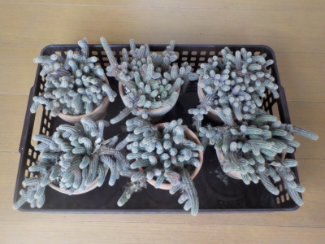
寒波で枯らすのは嫌なので屋内に避難させました。
ビャクダンは屋外でも冬を越せるみたいですが、念のためです。
長いこと植えっぱなしなので、ギュウギュウですね。
2021/12/25

寒波で枯らすのは嫌なので屋内に避難させました。
ビャクダンは屋外でも冬を越せるみたいですが、念のためです。
長いこと植えっぱなしなので、ギュウギュウですね。
2021/12/25
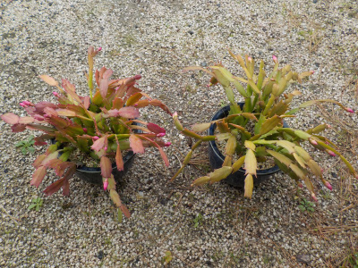
いつも年末には花が咲いているんですが、今年は無しです。
あまり寒くなかったので、屋内に入れる時期が遅くなったからな？
2021/05/30
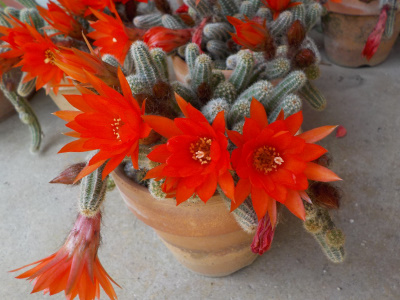
花が咲くといいですね。
違う種類のサボテンを買って花を咲かせたいと思いましたが、サボテンは今以上増やしたくないかな。
冬の置場がない。
2021/04/04
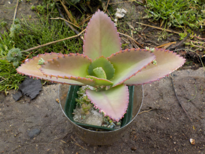
鉢植えの子宝弁慶草が寒波で枯れてしまったので、水耕裁判のものを鉢植えにすることにしました。
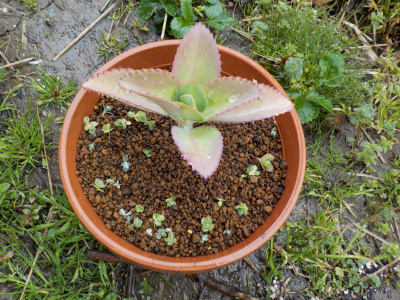
個人で見る分には水耕栽培でもいいんですが、育てたら人にも見て欲しいですよね。
そうなると鉢植えの方が見栄えがいいです。
次からは冬は屋内に入れて枯らさないようにしたいです。
2021/01/17
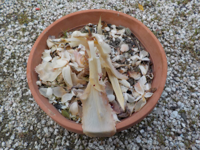
先週の寒波で凍って白くなりました。
これから溶けてなくなりそうです。
耐寒温度はプラス5度らしいので、軒下での越冬は無理だったみたいです。
屋内で育てている鉢が他にあるので増やすことは可能ですが、寒波のたびに屋内に入れるスペースと手間はないので、育てない方がいいかな。
2020/06/07
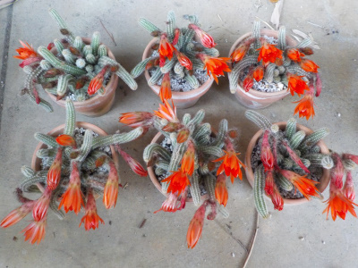
1年で成長して、花が沢山咲くようになりました。
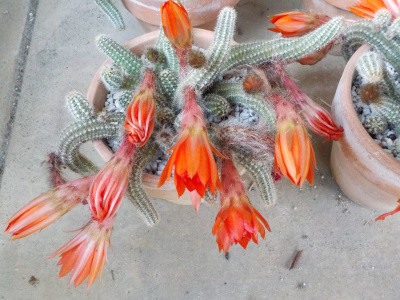
花を沢山見たらなんか満足しました。
今後は現状維持で、もう大きくならないでいいかな。
2020/05/16
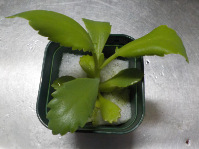
葉っぱの枚数も増えたし、根っこが鉢の下から出るようになりました。
子宝弁天草は水耕栽培で十分育ちそうです。
2020/02/15
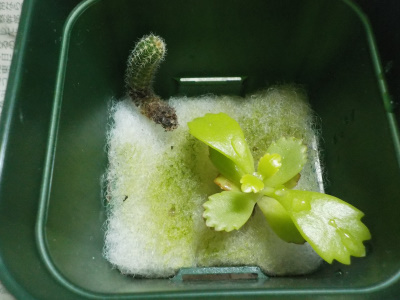
水耕栽培のサボテンが枯れだしました。
水のやりすぎです。
子宝弁天草は大きくなっているので、こっちだけを育てた方がいいかな。
2019/12/15
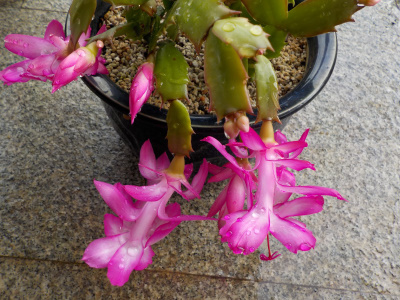
花が重くて下を向きます。
こうゆうものですが、上を向いてくれるともっといいですね。
2017/11/12
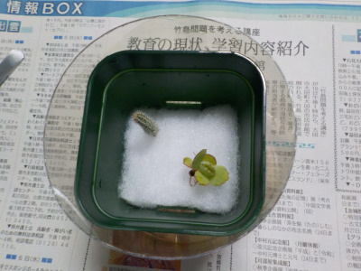
大きめのペットボトル下半分を受け皿にして、プラスチックの鉢に水槽用のろ過ウールマットを入れています。
受け皿には水が溜まっているので水耕栽培みたいな感じです。
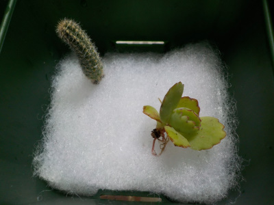
カランコエ（子宝弁慶草）と紐サボテン（白檀）を植えました。
室内での土と水の管理は失敗すると部屋が汚れて嫌です。
倒れたりしない安定した形状で、水やりの手間がすくない方法を検討中です。
畑仕事じゃないよ。